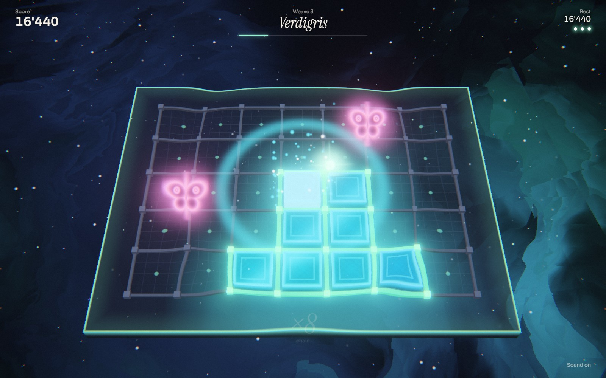
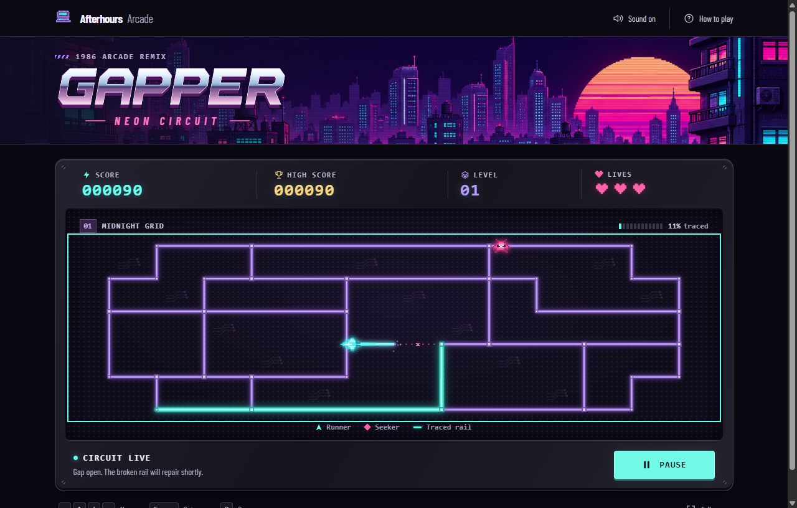
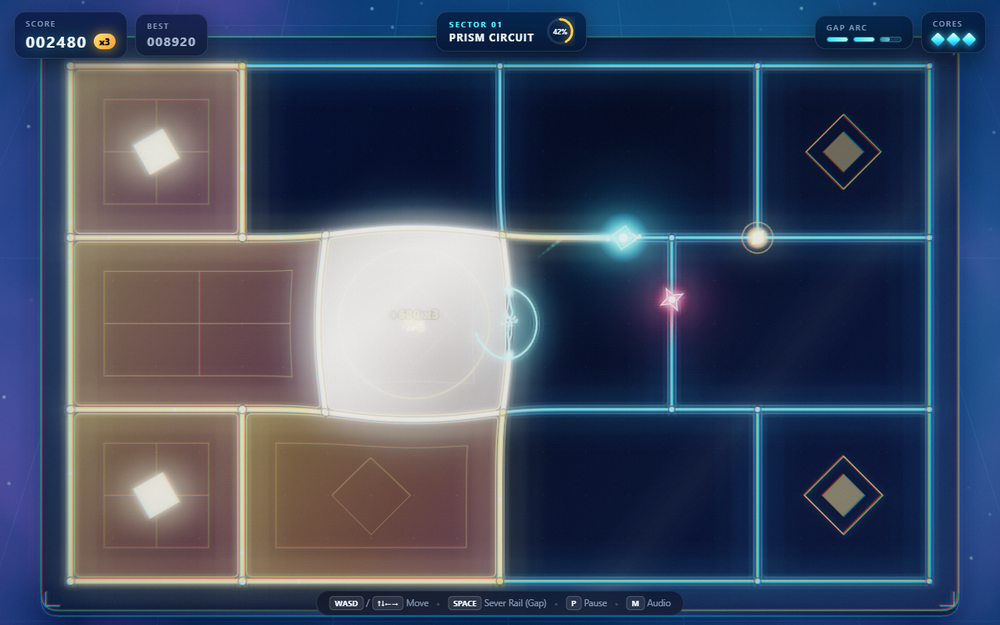

Gapper
Three arcade games inspired by the 1986 DOS game Gapper. Run along the lines of a grid, color every one and stay ahead of the pursuer. Each version below was built by a different AI assistant from the same brief.

Lightloom
Built with Claude. Weave threads of light on a floating loom while moths hunt you.
Play Lightloom
Neon Circuit
Built with ChatGPT. Glowing rails above a pixel-art city, and a gap to cut behind you.
Play Neon Circuit
Prism
Built with Gemini. WebGL 2 HDR bloom, synth-glass chambers, Prism Overdrive and 6 sectors.
Play Prism